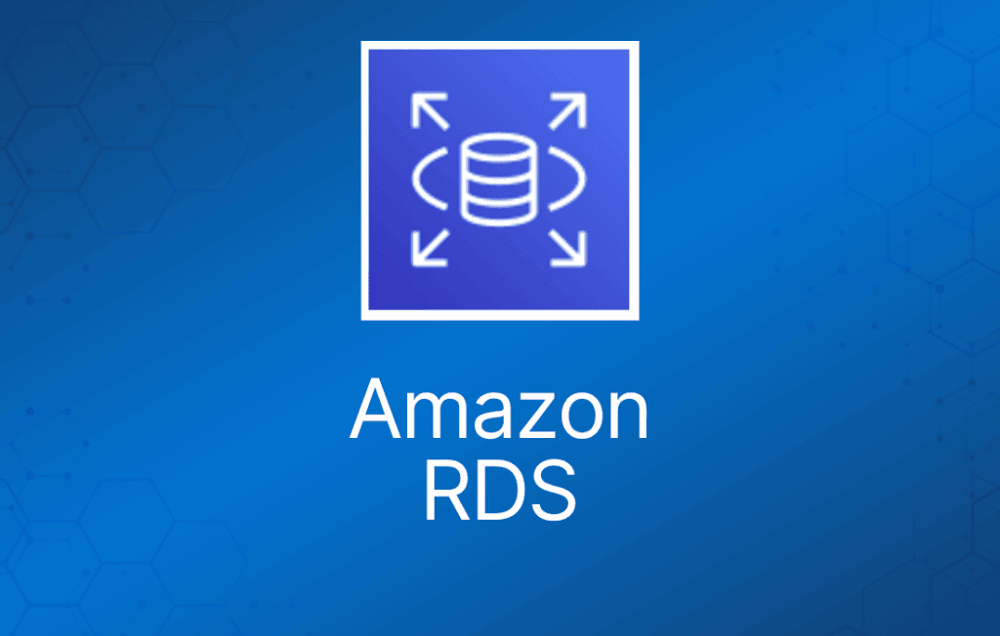
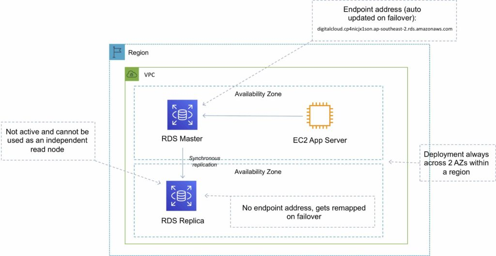
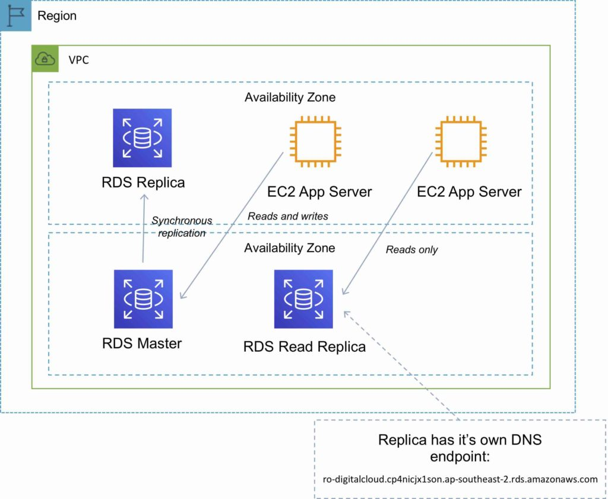

Amazon Relational Database Service (Amazon RDS) 是一项托管服务，可用于在 AWS 上启动和管理关系型数据库。
Amazon RDS 是一种联机事务处理（OLTP）类型的数据库。
主要使用场景是事务型数据库（而非分析型数据库）。
它最适合结构化关系型数据存储需求。
它的目标是成为现有本地同类数据库的即插即用替代品。
自动备份和补丁在客户定义的维护窗口内执行。
一键实现扩展、复制和冗余。
Amazon RDS 支持以下数据库引擎：
- Amazon Aurora。
- MySQL。
- MariaDB。
- Oracle。
- SQL Server。
- PostgreSQL。
RDS 是托管服务，你无法访问底层 EC2 实例（没有 root 权限）。
上述规则的例外是 Amazon RDS Custom，它允许访问底层操作系统。这是新功能，仅支持有限的数据库引擎，考试暂未涉及。
Amazon RDS 托管服务包含以下内容：
- DB 实例的安全加固和补丁。
- DB 实例的自动备份。
- 数据库引擎的软件更新。
- 存储和计算的轻松扩展。
- 带同步复制的 Multi-AZ 选项。
- Multi-AZ 选项的自动故障转移。
- 面向读密集负载的 Read Replica 选项。
DB 实例是云中的数据库环境，具备你指定的计算和存储资源。
数据库实例通过终端节点（endpoint）访问。
终端节点可以通过 AWS Management Console 中的 DB 实例描述、DescribeDBInstances API 或 describe-db-instances 命令获取。
默认情况下，客户最多可以拥有 40 个 Amazon RDS DB 实例（除非自带许可证，否则其中 Oracle 或 MS SQL 只能有 10 个）。
维护窗口用于执行 DB 实例修改，例如扩缩容和软件补丁（某些操作需要让 DB 实例短暂离线）。
你可以自定义维护窗口，否则 AWS 会安排一个 30 分钟的窗口。
SQL Server 的 Windows 集成身份验证只适用于使用 AWS Directory Service 创建的域——需要与本地 AD 目录建立信任关系。
事件与通知：
- Amazon RDS 使用 AWS SNS 通过 SNS 通知发送 RDS 事件。
- 你可以调用 Amazon RDS 服务的 API 列出最近 14 天的 RDS 事件（DescribeEvents API）。
- 你可以使用 CLI 查看最近 14 天的事件。
- 使用 AWS 控制台只能查看最近 1 天的 RDS 事件。
使用场景、替代方案与反模式
下表提供了何时最适合使用 RDS 以及其他几种 AWS 数据库/数据存储服务的指导：
| 数据存储 | 何时使用 |
| EC2 上的数据库 |
|
| Amazon RDS |
|
| Amazon DynamoDB |
|
| Amazon RedShift |
|
| Amazon Neptune |
|
| Amazon Elasticache |
|
| Amazon S3 |
|
Amazon RDS 的替代方案：
如果你的使用场景 RDS 不支持，可以在 Amazon EC2 上运行数据库。
在考虑将数据库部署到 EC2 上时，请注意以下几点：
- 你可以运行任何数据库，拥有完全的控制权和最大的灵活性。
- 你必须自己管理一切，如备份、冗余、补丁和扩展。
- 如果需要 RDS 尚不支持的数据库（如 IBM DB2 或 SAP HANA），这是不错的选择。
- 如果迁移到 AWS 托管数据库不可行，这也是不错的选择。
反模式（Anti-Pattern）：
反模式是指在架构或开发中被认为不好或不够优的做法——也就是说，可能有更好的服务或方法来获得最佳结果。
下表描述了不适合 RDS 的需求：
| 需求 | 更合适的服务 |
| 大量大二进制对象（BLOB） | S3 |
| 自动扩展能力 | DynamoDB |
| 键值数据结构 | DynamoDB |
| 数据结构不良好或不可预测 | DynamoDB |
| 其他数据库平台，如 IBM DB2 或 SAP HANA | EC2 |
| 对数据库的完全控制 | EC2 |
加密
你可以通过为 Amazon RDS DB 实例启用加密选项，对 Amazon RDS 实例和快照进行静态加密。
所有数据库类型都支持静态加密，使用 AWS KMS。
使用静态加密时，以下内容也会被加密：
- 所有数据库快照。
- 备份。
- DB 实例存储。
- Read Replica。
你无法加密现有数据库，需要先创建快照，复制该快照并加密副本，然后从该快照构建加密数据库。
静态加密的数据包括 DB 实例的底层存储、其自动备份、Read Replica 和快照。
当加密的 Amazon RDS 实例与其 Read Replica 位于同一区域时，Read Replica 也使用与主实例相同的密钥进行加密。
如果主实例与 Read Replica 位于不同区域，则使用该区域的加密密钥进行加密。
你不能为未加密的 DB 实例创建加密的 Read Replica，也不能为加密的 DB 实例创建未加密的 Read Replica。
加密/解密过程是透明处理的。
RDS 支持应用与 RDS DB 实例之间的 SSL 加密。
RDS 会为实例生成证书。
DB Subnet Group
DB subnet group 是你在 VPC 中创建的 subnet 集合（通常是私有 subnet），然后将其指定给你的 DB 实例使用。
每个 DB subnet group 应至少包含给定区域内两个 Availability Zone 中的 subnet。
建议在 subnet group 中配置覆盖每个 AZ 的 subnet（即使是单实例部署）。
创建 RDS 实例时，你可以选择 DB subnet group 以及组内用于放置 RDS DB 实例的 AZ。
你无法选择在 subnet 中分配的具体 IP。
计费与预置
AWS 对以下项目收费：
- DB 实例小时数（不足一小时按整小时计）。
- 存储 GB/月。
- I/O 请求/月——适用于磁存储（magnetic）。
- 预置 IOPS/月——适用于 RDS 预置 IOPS SSD。
- 出站数据传输。
- 备份存储（DB 备份和手动快照）。
RDS 自动备份的备份存储在不超过预置 EBS 卷大小的范围内免费。
但是，AWS 会跨多个 AZ 复制数据，因此 S3 上额外的存储空间会收费。
对于 multi-AZ，你需要为以下项目付费：
- Multi-AZ DB 小时数。
- 预置存储。
- 双倍写入 I/O。
对于 multi-AZ，主备之间复制产生的数据库数据传输不收费。
Oracle 和 Microsoft SQL 许可证已包含在内，也可以自带许可证（BYO）。
提供按需（on-demand）和预留实例（reserved instance）定价。
预留实例基于以下属性定义，且这些属性不可更改：
- 数据库引擎。
- DB 实例类。
- 部署类型（standalone、multi-AZ）。
- 许可模式。
- 区域。
预留实例：
- 可以在同一区域内的 AZ 之间移动。
- 可用于 multi-AZ 部署。
- 如果 DB 实例类和区域相同，可以应用于 Read Replica。
- 扩展通过更改实例类（计算）和修改存储容量（额外存储分配）来实现。
可扩展性
RDS 只能向上扩展（计算和存储）。
你无法减少 RDS 实例已分配的存储。
除 MS SQL 外，所有数据库引擎都可以扩展存储并更改存储类型。
对于 MS SQL，变通方法是从快照使用新配置创建一个新实例。
存储扩展可以在 RDS 实例运行时进行，不会中断服务，但性能可能会有所下降。
计算扩展会导致停机。
你可以选择让更改立即生效，但默认是在维护窗口内生效。
除非使用“apply immediately”，否则扩展请求会在指定的维护窗口内应用。
除 Microsoft SQL Server（16 TiB）外，所有 RDS 数据库类型的最大数据库大小均为 64 TiB。
性能
Amazon RDS 使用 EBS 卷（从不使用 instance store）存储数据库和日志。
有三种存储类型可用：General Purpose (SSD)、Provisioned IOPS (SSD) 和 Magnetic。
General Purpose (SSD)：
- 适用于 I/O 需求中等的数据库负载。
- 经济实惠。
- 也称为 gp2。
- 3 IOPS/GB。
- 可突增至 3000 IOPS。
Provisioned IOPS (SSD)：
- 适用于 I/O 密集型负载。
- 低延迟且 I/O 稳定。
- IOPS 由用户指定（见下表）。
对于 provisioned IOPS 存储，下表列出了每种数据库引擎的预置 IOPS 范围和存储大小范围。
| 数据库引擎 | 预置 IOPS 范围 | 存储范围 |
| MariaDB | 1,000-80,000 IOPS | 100 GiB-64TiB |
| SQL Server | 1,000-64,000 IOPS | 20 GiB-16TiB |
| MySQL | 1,000-80,000 IOPS | 100 GiB-64TiB |
| Oracle | 1,000-256,000 IOPS | 100 GiB-64TiB |
| PostgreSQL | 1,000-80,000 IOPS | 100 GiB-64TiB |
Magnetic（磁存储）：
- 不再推荐，仅为向后兼容而保留。
- 使用 SQL Server 数据库引擎时不允许扩展存储。
- 不支持弹性卷（elastic volume）。
- 最大大小限制为 4 TiB。
- 最大 IOPS 限制为 1,000。
Multi-AZ 与 Read Replica
Multi-AZ 和 Read Replica 用于实现高可用、容错和性能扩展。
下表对比了 multi-AZ 部署与 Read Replica：
| Multi-AZ 部署 | Read Replica |
| 同步复制——高持久性 | 异步复制——高可扩展性 |
| 只有主实例上的数据库引擎处于活动状态 | 所有 read replica 都可访问，可用于读扩展 |
| 自动备份从备实例执行 | 默认不配置备份 |
| 始终跨越单个区域内的两个可用区 | 可以位于同一可用区内、跨 AZ 或跨区域 |
| 数据库引擎版本升级发生在主实例上 | 数据库引擎版本升级独立于源实例 |
| 检测到问题时自动故障转移到备实例 | 可以手动提升为独立的数据库实例 |
Multi-AZ
Multi-AZ RDS 在另一个 AZ 中创建一个副本，并同步复制到该副本（仅用于 DR）。
启动向导中可以选择 multi-AZ 选项。
AWS 建议 multi-AZ RDS DB 实例使用 provisioned IOPS 存储。
每个 AZ 运行在物理上独立的基础设施上，设计上具备高可靠性。
你无法选择在该区域的哪个 AZ 创建备用 DB 实例。
你可以查看备用 DB 实例创建在哪个 AZ。
以下情况可能触发故障转移：
- 主 AZ 丢失或主 DB 实例故障。
- 主实例网络连接中断。
- 主实例的计算（EC2）单元故障。
- 主实例的存储（EBS）单元故障。
- 主 DB 实例被更改。
- 主 DB 实例的操作系统补丁。
- 手动故障转移（在主实例上选择 failover 重启）。
故障转移期间，RDS 会自动更新配置（包括 DNS 终端节点）以使用第二个节点。
根据实例类的不同，故障转移到备用 DB 实例可能需要 1 到几分钟。
建议在应用中实现数据库连接重试机制。
建议使用终端节点而非 IP 地址将应用指向 RDS 数据库。
手动触发 RDS DB 实例故障转移的方法是重启并选择 failover 选项。
更改 DB parameter group 或修改静态数据库参数后，需要重启 DB 实例才能使更改生效。
DB parameter group 是数据库引擎配置的容器。
故障转移发生时，你会收到 DB 实例事件告警。
multi-AZ 配置中的备用数据库不能用作独立的读取节点（读或写都不行）。
主备 RDS 实例之间的数据传输不收费。
系统升级（如操作系统补丁、DB 实例扩缩容和系统升级）会先在备实例上应用，然后再故障转移并修改另一个 DB 实例。
在 multi-AZ 配置中，快照和自动备份在备实例上执行，以避免主实例的 I/O 暂停。
Multi-AZ 的 Read Replica 支持：
- MySQL、MariaDB、PostgreSQL 和 Oracle 的 Amazon RDS Read Replica 支持 Multi-AZ 部署。
- 将 Read Replica 与 Multi-AZ 结合使用，可以构建弹性灾难恢复策略并简化数据库引擎升级流程。
- 位于与源数据库不同区域的 Read Replica 可以用作备用数据库，并在发生区域级中断时提升为新的生产数据库。
- 这使你在扩展读取能力的同时，也能通过 multi-AZ 实现 DR。
执行维护活动的流程如下：
- 在备实例上执行操作。
- 将备实例提升为主实例。
- 在新备实例（被降级的主实例）上执行操作。
你可以在 AWS 控制台手动将 DB 实例升级到受支持的数据库引擎版本。
默认情况下，升级会在下一个维护窗口生效。
你也可以选择强制立即升级。
在 multi-AZ 部署中，版本升级会同时在主实例和备实例上进行，导致两个 DB 实例同时中断。
确保 security group 和 NACL 允许你的应用服务器与主实例和备实例通信。

Read Replica
Read replica 用于读密集型数据库，复制是异步的。
Read replica 用于负载分担和卸载。
Read replica 提供只读的 DR。
Read replica 从主实例的快照创建。
主实例必须启用自动备份（保留期 > 0）。
仅支持事务性数据库存储引擎（InnoDB 而非 InnoDB）。
Read replica 可用于 MySQL、PostgreSQL、MariaDB、Oracle、Aurora 和 SQL Server。
对于 MySQL、MariaDB、PostgreSQL 和 Oracle 数据库引擎，Amazon RDS 使用源 DB 实例的快照创建第二个 DB 实例。
然后，每当源 DB 实例发生更改时，就使用引擎原生的异步复制来更新 read replica。
Amazon Aurora 采用专为数据库负载打造的 SSD 支持的虚拟化存储层。
你可以对 PostgreSQL read replica 拍摄快照，但无法启用自动备份。
你可以在 MySQL 和 MariaDB read replica 上启用自动备份。
你可以在 MySQL 和 MariaDB Read Replica 上启用写入。
一个生产数据库最多可以有 5 个 read replica。
一个复制链中涉及的实例不能超过 4 个。
MySQL 和 MariaDB 支持 read replica 的 read replica，PostgreSQL 不支持。
Read replica 可以通过 AWS 控制台或 API 配置。
你可以指定 read replica 部署在哪个 AZ。
Read replica 的存储类型和实例类可以与源实例不同，但计算性能至少应与源实例相当。
你无法更改数据库引擎。
在 multi-AZ 故障转移中，read replica 会切换到新的主实例。
Read replica 必须显式删除。
如果源 DB 实例被删除而未删除其 replica，则每个 replica 都会成为独立的单 AZ DB 实例。
你可以将 read replica 提升为主实例。
提升 read replica 需要几分钟。
被提升的 read replica 会保留：
- 备份保留窗口。
- 备份窗口。
- DB parameter group。
现有的 read replica 继续正常工作。
每个 read replica 都有自己的 DNS 终端节点。
Read replica 可以启用 multi-AZ，你也可以为 multi-AZ 源数据库创建 read replica。
Read replica 可以位于另一个区域（使用异步复制）。
这种配置可用于将来自不同区域的数据集中起来进行分析。

DB 快照
DB 快照由用户发起，让你能够按需要的频率备份处于已知状态的 DB 实例，然后恢复到该特定状态。
不能用于时间点恢复（point-in-time recovery）。
快照存储在 S3 上。
快照会一直保留在 S3 上，直到手动删除。
备份在定义的窗口内执行。
备份初始化时 I/O 会短暂暂停，可能增加延迟（适用于单 AZ RDS）。
手动执行的 DB 快照即使在 RDS 实例删除后也会保留。
恢复出的数据库始终是具有新 DNS 终端节点的新 RDS 实例。
最多可以恢复到最近 5 分钟内的状态。
只会恢复默认的数据库参数和 security group——你必须手动关联所有其他数据库参数和 SG。
建议在删除 RDS 实例前先拍摄一个最终快照。
快照可以与其他 AWS 账户共享。
数据库的高可用方案
如果可以，优先选择 DynamoDB 而非 RDS，因为它天然具备容错能力。
如果 DynamoDB 不适用，选择 Aurora，因为它具备冗余和自动恢复特性。
如果 Aurora 不适用，选择 Multi-AZ RDS。
频繁的 RDS 快照可以防止数据损坏或故障，而且不会影响 Multi-AZ 部署的性能。
区域复制也是一种选择，但无法做到强一致性。
如果数据库运行在 EC2 上，你必须自己设计高可用方案。
迁移
AWS Database Migration Service 帮助你快速、安全地将数据库迁移到 AWS。
结合 Schema Conversion Tool (SCT) 使用，可将数据库迁移到 AWS RDS 或基于 EC2 的数据库。
迁移期间源数据库保持完全运行，将依赖该数据库的应用停机时间降到最低。
AWS Database Migration Service 可以在大多数广泛使用的商业和开源数据库之间迁移数据。
Schema Conversion Tool 可以为同构迁移（相同数据库）复制数据库 schema，也可以为异构迁移（不同数据库）转换 schema。
DMS 用于较小、较简单的迁移，并支持 MongoDB 和 DynamoDB。
SCT 用于较大、较复杂的数据集，如数据仓库。
DMS 提供从本地到 AWS、到 Snowball 或 S3 的复制功能。
监控、日志与报告
你可以使用以下自动化监控工具来观察 Amazon RDS，并在出现问题时报告：
- Amazon RDS Events——订阅 Amazon RDS 事件，在 DB 实例、DB 快照、DB parameter group 或 DB security group 发生更改时收到通知。
- 数据库日志文件——使用 Amazon RDS 控制台或 Amazon RDS API 查看、下载或监视数据库日志文件。你还可以查询加载到数据库表中的某些日志文件。
- Amazon RDS Enhanced Monitoring——实时查看操作系统的指标。
- Amazon RDS Performance Insights——评估数据库负载，确定何时以及在何处采取行动。
- Amazon RDS Recommendations——查看针对数据库资源（如 DB 实例、read replica 和 DB parameter group）的自动化建议。
此外，Amazon RDS 还与 Amazon CloudWatch、Amazon EventBridge 和 AWS CloudTrail 集成，提供更多监控能力：
- Amazon CloudWatch Metrics——Amazon RDS 每分钟自动将每个活动数据库的指标发送到 CloudWatch。CloudWatch 中的 Amazon RDS 指标不额外收费。
- Amazon CloudWatch Alarms——你可以在特定时间段内监视单个 Amazon RDS 指标，然后根据指标值与你设置的阈值的相对关系执行一个或多个操作。
- Amazon CloudWatch Logs——大多数数据库引擎允许你在 CloudWatch Logs 中监控、存储和访问数据库日志文件。
- Amazon CloudWatch Events 和 Amazon EventBridge——你可以自动化 AWS 服务并响应系统事件，例如应用可用性问题或资源变更。来自 AWS 服务的事件几乎实时地传送到 CloudWatch Events 和 EventBridge。你可以编写简单的规则来指定关注哪些事件，以及事件匹配规则时要执行哪些自动化操作。
- AWS CloudTrail——你可以查看用户、角色或 AWS 服务在 Amazon RDS 中执行的操作记录。CloudTrail 将 Amazon RDS 的所有 API 调用捕获为事件，包括来自 Amazon RDS 控制台的调用和代码对 Amazon RDS API 的调用。如果你创建了 trail，可以将 CloudTrail 事件持续传送到 Amazon S3 bucket，包括 Amazon RDS 的事件。即使没有配置 trail，你仍然可以在 CloudTrail 控制台的 Event history 中查看最近的事件。
授权与访问控制
Amazon RDS 支持 identity-based policy（基于身份的策略）。
RDS 不支持 resource-based policy（基于资源的策略）。
以下 AWS 托管策略（可附加到账户中的用户）是 Amazon RDS 专用的：
- AmazonRDSReadOnlyAccess——授予对指定 AWS 账户中所有 Amazon RDS 资源的只读访问权限。
- AmazonRDSFullAccess——授予对指定 AWS 账户中所有 Amazon RDS 资源的完全访问权限。
你可以使用 AWS Identity and Access Management (IAM) 数据库身份验证对 DB 实例进行身份验证。IAM 数据库身份验证适用于 MySQL 和 PostgreSQL。使用这种身份验证方法，连接 DB 实例时无需使用密码，而是使用身份验证令牌（authentication token）。
IAM 数据库身份验证具有以下优势：
- 进出数据库的网络流量使用 Secure Sockets Layer (SSL) 加密。
- 你可以使用 IAM 集中管理对数据库资源的访问，而不必在每个 DB 实例上单独管理访问。
- 对于运行在 Amazon EC2 上的应用，你可以使用 EC2 实例特有的 profile 凭证访问数据库，而无需密码，更加安全。